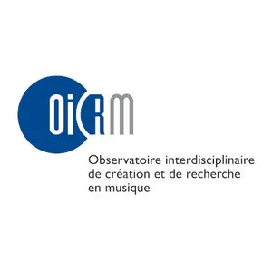

Revisiting the original
synthesizer: spectral
analysis and synthesis of
a Casavant Frères pipe organ
for creative application
in an augmented
instrument context
by Kjel Sidloski
of project
To explore the intersection of modern and ancient technology by interfacing the pipe organ and software, with the aim of weaving new artistic and poetic expressions, rooted in history, with a lens to the future.
Tables of contents
- 2.1 The pipe organ of l'église Saint-Édouard
- 2.2 Interface considerations
- 2.2 Posture and approach
- 2.3 Synthesis
- 2.4 Analysis
- 2.5 OrganLab
- 3.1 Inspirations
- 3.2 Poetic framework
Introduction
1. Hyper-instrument context
2. Constructing a hyper-organ
4. Creative application : Élégies
Conclusion
Bibliographie
Introduction

Introduction
Theme of presentation
- Emulations
- Additive
- Subtractive
- Frequency modulation
- Mutations
- Continuous pitches, like glissandi
- Interpolation between different stops
- Dynamic envelope shaping
- Independent control of harmonic content and noise content
- Explosion and contraction of timbral space
- Inharmonic sounds
Spectral Analysis
Synthesis

1. Hyper-instrument context
- Distinguished from digital lutherie by the usage of acoustic instruments.
What is a hyper-instrument
« Well, the basic idea of a hyperinstrument is where the technology is built right into the instrument so that the instrument knows how it's being played literally, what the expression is, what the meaning is, what the direction of the music is. » - Todd Machover, 2008.
1. Hyper-instrument context
History
- Keyboard and midi percussion controllers with a Hyperlisp synth module - 1989
- Yo-Yo Ma's hyper-cello - 1991
Tod Machover and the MIT laboratory - 1983
The hyper-shaku by Beilharz, Jakovich, et Ferguson – 2006
The hyper-piano by Andrew McPherson - 2012
1. Hyper-instrument context
Hyper-organ
Orgelpark - 2011
1. Hyper-instrument context
Hyper-organ
Orgelpark - 2011
Lauren Redhead - 2014
1. Hyper-instrument context
Interface approaches
Gesture trackers
Touch pressure sensitivity sensors
Air pressure sensitivity sensors
Midi controller
Live audio effects
**The choice of approach or hybrid approach will depend on the selected instrument and the performer and or composer's intentions
1. Hyper-instrument context
Convergent/divergent interface design
- Interface is coordinated with pre-existing gestures
- Parameters are linked
- Examples:
- Mapping the x plane of a keyboardists hands to a given sonic parameter (linked with pitch)
- Mapping air pressure of a wind instrument player to a given sonic parameter (linked with intensity)
- Advantages:
- Mapping is intrinsically connected to the existing gestural framework
- There may be a musical coherence
- Musician doesn't have to learn anything new (in theory)
Convergence
1. Hyper-instrument context
Convergent/divergent interface design
- Interface takes advantage of unused gestures
- Parameters are controlled independently
- Examples:
- Mapping a wind player's x plane to a given sonic parameter
- Mapping a keyboardist's wind pressure to a given sonic parameter
- Advantages:
- Opens up new avenues for expressivity
- Avoids potential of unwanted bundling of parameters
- Provides new forms of virtuosity
Divergence
2. Construction of a hyper-organ
2. Construction of a hyper-organ
2.1 The pipe organ of l'église Saint-Édouard
Constructed in 1913 by Casavant Frères
Their 534e œuvre
Symphonic pipe organ
Electro-pneumatic traction
Three keyboards
53 ranks (More than 3000 pipes!)
No midi

2. Construction of a hyper-organ
2.2 Posture and approach
2. Construction of a hyper-organ
2.2 Posture and approach
A composer/player's interface wishlist
Should integrate with the pipe organ's soundworld
Should extend this soundworld using the limitations of the original instrument as an inspiration
Should use both convergent and divergent mappings
Should facilitate the navigation of the continuum of acoustic and synthetic timbral profiles
2. Construction of a hyper-organ
2.2 Posture and approach
My personal solution: hyper-organ modalities
1. Synthesis (divergent)
2. Real-time effects (convergent)
3. Bed tracks (divergent)
2. Construction of a hyper-organ
2.3 Synthesis
Additive
- Independant envelopes on each harmonic
- More rapid attack and decay for higher pitches
Good for the harmonic content
To simulate the pipe organ (Comerford, 1993)
2. Construction of a hyper-organ
2.3 Synthesis
Subtractive
Good for the noise content
2. Construction of a hyper-organ
2.3 Analysis (a composer's approach)
Based on mono recordings taken as close to the instrument as possible
Spectrograms using Sonic Visualiser
Visual (based on spectrogram) and aural (based on recording) approximation of spectral data
2. Construction of a hyper-organ
2.4 Synthesis
OrganLab
2. Construction of a hyper-organ
2.4 Synthesis
Going beyond the limits
- Continuous frequences (glissandi)
Why simulate the organ?
2. Construction of a hyper-organ
2.4 Synthesis
Going beyond the limits
- Continous frequencies (glissandi)
Why simulate the organ?
2. Construction of a hyper-organ
2.4 Synthesis
Going beyond the limits
- Continous frequencies (glissandi)
- Interpolation
Why simulate the organ?
2. Construction of a hyper-organ
2.4 Synthesis
Going beyond the limits
- Continous frequencies (glissandi)
- Interpolation
Why simulate the organ?
2. Construction of a hyper-organ
2.4 Synthesis
Going beyond the limits
- Continous frequencies (glissandi)
- Interpolation
- Inharmonic sounds
Why simulate the organ?
2. Construction of a hyper-organ
2.4 Synthesis
Going beyond the limits
- Continous frequencies (glissandi)
- Interpolation
- Inharmonic sounds
Why simulate the organ?
2. Construction of a hyper-organ
2.4 Synthesis
Going beyond the limits
- Continous frequencies (glissandi)
- Interpolation
- Inharmonic sounds
- Separation of harmonic and noise content
Why simulate the organ?
2. Construction of a hyper-organ
2.4 Synthesis
Going beyond the limits
- Continous frequencies (glissandi)
- Interpolation
- Inharmonic sounds
- Separation of harmonic and noise content
Why simulate the organ?
2. Construction of a hyper-organ
2.4 Synthesis
Going beyond the limits
- Continous frequencies (glissandi)
- Interpolation
- Inharmonic sounds
- Separation of harmonic and noise content
- Dynamic envelopes
Why simulate the organ?
2. Construction of a hyper-organ
2.4 Synthesis
Going beyond the limits
- Continous frequencies (glissandi)
- Interpolation
- Inharmonic sounds
- Separation of harmonic and noise content
- Dynamic envelopes
Why simulate the organ?
2. Construction of a hyper-organ
2.4 Synthesis
Going beyond the limits
- Continous frequencies (glissandi)
- Interpolation
- Inharmonic sounds
- Separation of harmonic and noise content
- Dynamic envelopes
- Sampling
Why simulate the organ?
2. Construction of a hyper-organ
2.4 Synthesis
Going beyond the limits
- Continuous frequencies (glissandi)
- Interpolation
- Inharmonic sounds
- Separation of harmonic and noise content
- Dynamic envelopes
- Sampling
Why simulate the organ?
3. Creative application : Élégies
3. Creative application : Élégies
3.1 Inspiration
- Corréspondance poétique
Études d'hyper-orgue
10 élégies de duino de Rainer Maria Rilke

Conclusion
A rich avenue
Integration / juxtaposition of the real and the artificial
Space and heritage
Bibliography
Alary, O. (2020). Vers une musique hantologique instrumentale: Réflexions sur l’écriture technomorphe dans le contexte de la musique instrumentale contemporaine. https://papyrus.bib.umontreal.ca/xmlui/handle/1866/23593
Beilharz, K. A., Jakovich, J., & Ferguson, S. (2006). Hyper-shaku (Border-crossing): Towards the Multi-modal Gesture-controlled Hyper-Instrument. NIME, 352–357.
Comerford, P. (1993). Simulating an Organ with Additive Synthesis. Computer Music Journal, 17(2), 55–65. https://doi.org/10.2307/3680869
Fidom, J. (2011). Ist das Musik⁈ Die Phenomenologie der Orgelimprovisation: The Orgelpark Research Program. Musiktheorie Und Improvisation, Kongressbericht Der IX. Jahrestagung Der Gesellschaft Für Musiktheorie in Mainz, 140–147.
Levenson, T. (1994). Taming the hypercello. The Sciences, 34(4), 15–18.
Machover, T. (1984). Computer music with and without instruments. Contemporary Music Review, 1(1), 203–230.
Machover, T. (1989). Hyper-instruments: Musically intelligent and interactive performance and creativity systems. ICMC Proc., 186–190.
McPherson, A. P., & Kim, Y. E. (2012). The Problem of the Second Performer: Building a Community Around an Augmented Piano. Computer Music Journal, 36(4), 10–27.
Redhead, L. (2014). Sound and Space: Music for Organ and Electronics.
Redhead, L., & Zaldua, A. (2016). The Organ as Live Interface.
Thank you!
If you have any questions:
net@kjel.ca
A special thanks to the OICRM for graciously supporting this project

bit.ly/49E1Td5